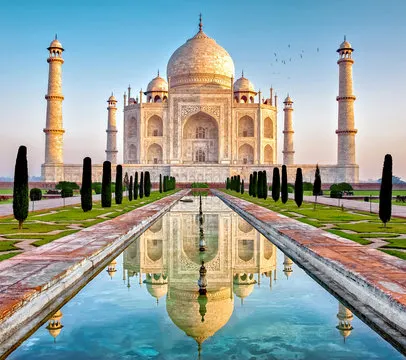
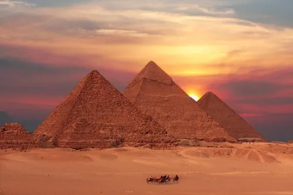
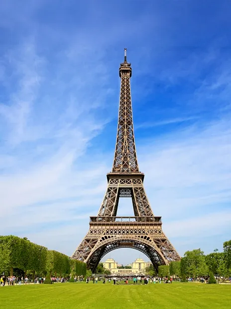
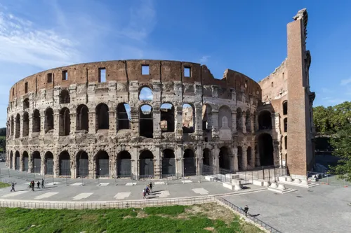
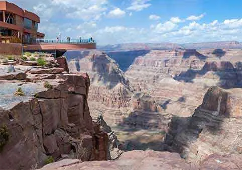
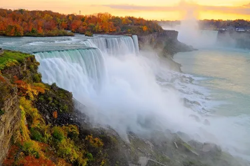
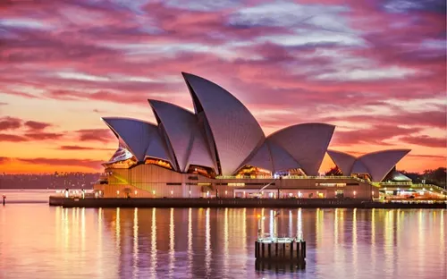

Asian Adventure Trail
Top Attractions

Taj Mahal, India
Iconic white marble mausoleum built by Shah Jahan
Great Wall of China
13,000-mile ancient fortification
African Safari Journey
Must-See Locations

Pyramids of Giza
Ancient wonders of the world
European Cultural Tour
Cultural Highlights

Eiffel Tower, France
Iconic Parisian landmark

North American Expedition
Iconic Destinations

Grand Canyon
Massive geological wonder

South American Adventure
Natural Wonders

Australian Discovery
Unique Experiences

Sydney Opera House
Architectural masterpiece